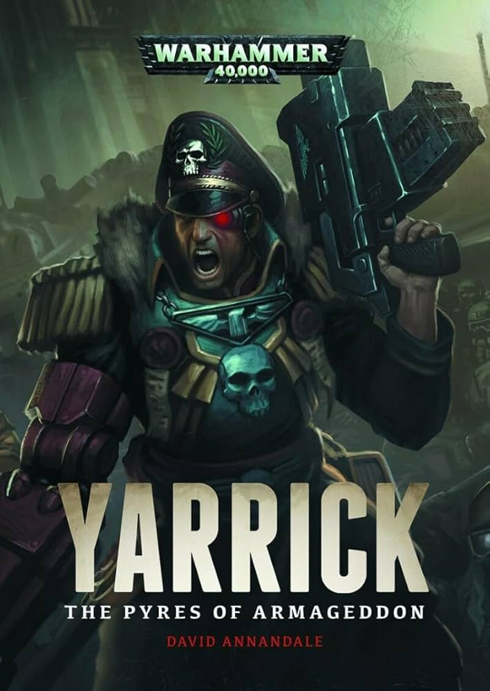

Második szakmára járok a számalk szalézi technikumba, elsőnek szoftverfejlesztőt jártam ki. Azért jöttem hálózatra, hogy egy jó belátást kapjak az informatika másik felébe.
21 éves és tökön lakok ami perbál és zsámbék között található.
játékokból szeretek total war warhammer 3-al, warframe, illetve baldur gates 3-al játszani, és szeretek olvasni warhammer 40k könyveket.
jelenleg cádia becsületét olvasom.
|
 |